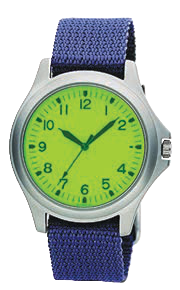
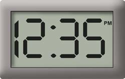
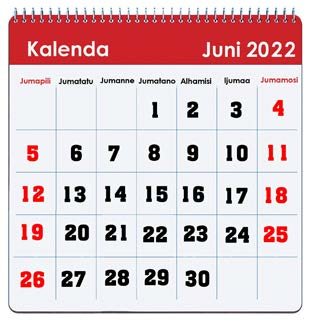

Vipimio vya muda
Vipimio vya muda vinaweza kuwa saa au kalenda.
Kuna aina mbili za saa ambazo ni saa ya mshale na saa ya kidigiti.
Saa hutumika kupima muda kwa saa ishirini na nne za siku,
Kalenda hutumika kupima siku, wiki na miezi katika mwaka.

Saa ya mshale
Saa ya kidigiti
KalendaZoezi la 1
Jedwali lifuatalo linaonesha matokeo ya muda waliotumia wanafunzi wanne kusimama kwa mguu mmoja katika mchezo wao.
Soma muda huo, kisha jibu maswali yanayofuata.
| Jina | Muda |
| Musa | Dakika 1 na sekunde 24 |
| Neema | Dakika 1 na sekunde 40 |
| Sofia | Sekunde 103 |
| Hassan | Dakika 1 na sekunde 36 |
1. Nani alitumia muda mrefu kuliko wote?
2. Nani alitumia muda mfupi kuliko wote?
3. Neema alitumia sekunde ngapi?
4. Musa alitumia sekunde ngapi?
5. Hassan alitumia sekunde ngapi?
6. Sofia alitumia dakika na sekunde ngapi?